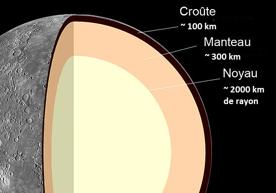

Mercure est la premiere planete du systme solaire.En raison de sa proximité avec le Soleil,la température de Mercure peut atteindre jusqu'à 430°C à sa surface pendant la journée, tandis que la température nocturne peut chuter jusqu'à -180°C.
Mercure a une surface très ancienne et fortement cratérisée, avec des bassins d'impact, des falaises escarpées et des plaines lisses. La planète a également un petit champ magnétique,
Mercure est la plus petite planète du système solaire, possédant une croûte, un manteau et un noyau. Sa croûte est fine et composée de roches silicatées, sujette à une expansion et une contraction thermiques importantes.
Son manteau est également fin et principalement composé de silicates, mais peut également contenir du fer et du soufre. Son noyau est le plus grand de toutes les planètes rocheuses, principalement composé de fer liquide et responsable de la rotation de la planète. En raison de la proximité de Mercure avec le Soleil, sa structure géologique est sujette à des variations importantes en réponse aux processus géologiques et volcaniques qui se produisent sur la planète.